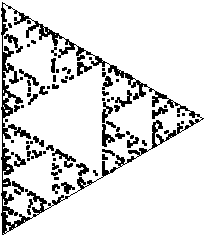
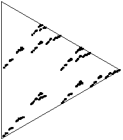
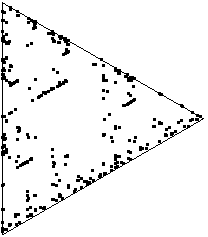
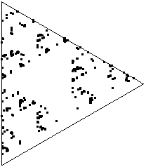
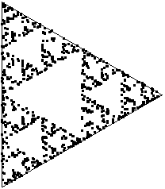
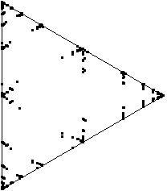

| Referring to the chaos game,
Ian Stewart asked "What happens if the computer's
random number generator is replaced by some more familiar dynamical system?" |
| For most of his tests, Stewart used the chaos game fixed points the vertices
(0, 0), ((√3)/2, 1/2), and (0, 1) of
an equilateral triangle. The corresponding IFS rules are |
| T1(x, y) = (x/2, y/2) |
| T2(x, y) = (x/2, y/2) + (0, 1/2) |
| T3(x, y) = (x/2, y/2) + ((√3)/4, 1/4) |
|
| For reference,
a random number generator gives picture (A). All pictures consist of 1000 points. How
were the other pictures generated? |
|  |
 |
 |
| (A) |
(B) |
(C) |
|  |
 |
 |
| (D) |
(E) |
(F) |
|
| Pictures (B) through (F) are generated sequences of numbers,
coarse-grained into three
equal-size bins. |
| (B) is produced by iterating the logistic map
xn+1 = 4xn(1 - xn). |
| (C) is produced from sin(t) + sin(t⋅√2). We took t = 1, 2, ..., 1000.
Our picture differs a bit from Stewart's so evidently he used a different time scaling. |
| (D) is produced from sin(t) + sin(t⋅√5). |
| (E) is produced from sin(t) + sin(t⋅√3) + sin(t⋅√5). |
| (F) uses the same function as (E), but here t = 0.1, 0.2, ..., 100. |
|
| Stewart closed his paper with these thoughts. |
"I have no idea why these results are occurring. On the face of it, the
chaos game's invariant sets (or, at least, the probability densities associated with
them) appear to distinguish various types of correlation in chaotic time-series. Indeed they
seem to be inordinately sensitive to such correlations, but in a rather unpredictable manner.
"Can these phenomena be explained? If so, can the method be used to detect structure in real
time-series? Maybe somebody would like to think about it." |
|